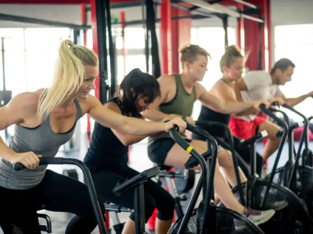

De 10 beste sportscholen in Nijmegen
Bijgewerkt op 20 november 2026.
Een sportschool zoeken in Nijmegen? In onze bedrijvengids staan er ruim vijftig, van ketens die dag en nacht open zijn tot kleine studio's waar de trainer je naam kent. Wij zochten de tien uit die er in hun eigen soort echt uitspringen, verspreid over de stad: van Dukenburg tot Oosterhout en van het Waalfront tot Oost. Per sportschool lees je voor wie hij het best past, wanneer je terecht kunt en hoe je gratis kunt proberen.

Zo hebben we gekozen
We zijn begonnen bij de sportscholen in onze bedrijvengids. In oktober 2026 hebben we van elke sportschool de website nagelopen: wat je er kunt doen, hoeveel begeleiding je krijgt, wanneer de deur open is en of je eerst kunt proberen. Gesloten zaken en zaken waar we te weinig over konden vinden, vielen af. Daarna kozen we per soort sportschool de sterkste, zodat er voor elk doel en in elk deel van de stad iets bij zit. De volgorde is geen ranglijst, en geen van deze sportscholen heeft voor een plek betaald.
1. Riverland Healthcentre: de meeste afwisseling
Wie snel verveeld raakt van hetzelfde rondje langs de apparaten, zit goed in De Biezen, vlak bij het Waalfront. Riverland zit in de hallen van een oude fabriek en heeft een rooster dat je niet in een paar weken uitgeprobeerd hebt: kickboksen voor jeugd en volwassenen, zumba, yoga, Spartan workouts en zelfs breakdance. Voor jonge ouders is er Baby en Fit.
Bij mooi weer verhuist een deel van de training naar buiten, met bootcamps in het Westerpark, bij de Lentse Warande en op de Waalkade. Personal training kan alleen, met z'n tweeën of in een klein groepje, en er werken een fysiotherapeut en een sportdiëtist. Doordeweeks ben je welkom tot 22.00 uur, in het weekend tot 15.00 uur. Met het Ultimate-lidmaatschap kom je er zelfs dag en nacht in.
Goed voor: sporters die elke week iets anders willen, en ouders met een baby.
2. Sports Palace: sporten en daarna de sauna in
Sports Palace in Dukenburg is net helemaal verbouwd en heeft de ruimste openingstijden van alle sportscholen met personeel in deze lijst: elke dag van 6.00 tot 23.00 uur. Je kunt er vrij trainen, aansluiten bij live groepslessen, Hyrox-training doen of squashen. Heb je weinig tijd, dan pak je een EGYM-circuit van een half uur.
Het grote pluspunt is de wellness met sauna, voor na de training. Goed om te weten: de sauna is naakt, behalve op woensdagavond, dan draag je badkleding. Er is ook een programma voor jongeren, en wie liever persoonlijke begeleiding heeft, boekt een personal trainer.
Goed voor: wie na het sporten wil ontspannen, en vroege vogels en late trainers.
3. CrossFit Nijmegen: techniek leren in een kleine groep
In deze ruime box aan de Nieuwe Mollenhutseweg train je nooit alleen. Elke les staat er een coach die op je techniek let terwijl je werkt aan gewichtheffen, gymnastiek en conditie. Naast de dagelijkse workout zijn er specialties, Hyrox-training en personal training. Met CrossFit Masters is er een eigen programma voor 55-plussers.
Ben je nieuw, dan begin je niet meteen in de groep. Eerst volg je een Health Check van twee sessies waarin je de basisbewegingen leert, zodat je daarna veilig kunt meedoen. De box is zeven dagen per week open en je kunt er ook met je bedrijf terecht voor een teamuitje.
Goed voor: wie sterker wil worden met begeleiding, en 55-plussers die willen blijven bewegen.
4. Freyheyt Sportlounge: fitness plus pilates en yoga
Net buiten het centrum, aan de Gerard Noodtstraat, combineer je vrij fitnessen met een breed lesrooster. Je traint op Panatta-apparatuur en de groepslessen zitten gewoon in je lidmaatschap. Het rooster loopt van pilates, barre, yin yoga en yoga flow tot HIIT, core, boxing core en Power-lessen op de fiets.
Je reserveert je les in de app. Zoek je meer houvast, dan kies je voor personal training, de Workout of the Day of EMS-training. Van maandag tot en met donderdag ben je welkom van 7.00 tot 22.00 uur, en ook op zondag kun je tot 15.00 uur terecht.
Goed voor: wie krachttraining wil afwisselen met pilates of yoga, dicht bij de binnenstad.
5. Provectas: boutique gym met reformer pilates
Provectas in Nijmegen-West is klein en dat is precies de bedoeling. In een industrieel ingerichte gym aan de Mercuriusstraat sport je zonder drukte, met trainers die meekijken. Je kiest tussen vrij trainen en lessen in kleine groepen: Hyrox-workouts, boxing fitness, yoga, mat- en reformer-pilates en small group training. Er is ook een booty-workout die alleen voor vrouwen is.
Heb je een concreet doel, dan ga je met een personal trainer aan de slag, als beginner of als ervaren sporter. Na je aanvraag voor een gratis proefles bellen de trainers je voor een kennismaking en een rondleiding.
Goed voor: wie een rustige gym zoekt en reformer-pilates wil combineren met kracht en Hyrox.
6. Sanasport Health Club: met de fysio in hetzelfde gebouw
Op de eerste verdieping van Sanadome Hotel & Spa zit een health club die vooral rust en begeleiding biedt. Je begint met een intake met basismetingen, een fietstest en een bewegingsscreening, en krijgt een schema op de toestellen van Life Fitness. Er loopt altijd iemand rond die je verder helpt.
Het verschil met andere sportscholen: de fysiotherapeuten zitten in hetzelfde gebouw en je kunt er zonder verwijzing van de huisarts terecht. Dat maakt Sanasport een logische keus als je na een blessure weer wilt opbouwen. De club is 365 dagen per jaar open en als lid parkeer je gratis.
Goed voor: herstel na een blessure, en wie liever in een rustige zaal traint.
7. Basic-Fit Kerkenbos: 24 uur per dag open
Werk je in ploegendienst, of train je het liefst om middernacht? De vestiging van Basic-Fit aan Kerkenbos in Dukenburg gaat nooit dicht: zeven dagen per week, 24 uur per dag. De club is verdeeld in zeven zones, met onder meer een flink cardiogedeelte.
Begeleiding is hier vooral digitaal: in de groepsleszaal doe je mee met video-workouts zoals Bodypump, Box, Pilates en Bootcamp. Wil je een echte trainer, dan huur je een personal trainer in. Na afloop kun je in een massagestoel zitten en met de body analyzer je voortgang meten. Met een dagpas kijk je eerst rustig rond.
Goed voor: nachtbrakers, ploegendienst en wie zelfstandig traint.
8. The Kettlebell Club: kracht en conditie in kleine groepen
Bij The Kettlebell Club in Nijmegen draait het om kettlebells, barbells, de bokszak en hybride workouts. Je traint in kleine groepen met trainers die echt naar je techniek kijken, en wie zich voorbereidt op Hyrox of een Gymrace vindt hier een gericht programma.
Train je liever op je eigen moment, dan kun je in de open gym terecht. Voor persoonlijke begeleiding is er een eigen studio voor personal training, met metingen en voedingsadvies. Buiten geeft de club bootcamp bij de Nevengeul. Nieuw? Begin met een gratis proefmaand of een proefweek personal training.
Goed voor: wie wil trainen voor Hyrox of een obstacle run, of gewoon sterker wil worden.
9. Nimma Moves: alleen voor vrouwen, in een half uur klaar
Nimma Moves in de Archipelstraat is een sportschool alleen voor vrouwen. Je loopt een circuit van een half uur en wisselt elke veertig seconden van toestel. Reserveren hoeft niet, want er is altijd een plek vrij in de kring.
De toestellen werken hydraulisch. Daardoor train je spierkracht en balans zonder de dag erna stijf te zijn, en dat maakt het ook geschikt als je al lang niet gesport hebt. Coaches lopen mee en kennen je snel bij naam. Let op de openingstijden: 's ochtends en in de vroege avond, en op zon- en feestdagen gesloten. Een begeleide proefles met Fit-check vraag je het makkelijkst aan via WhatsApp.
Goed voor: vrouwen die weinig tijd hebben of opnieuw willen beginnen met sporten.
10. Ultrasport: grote fitnessvloer in Nijmegen-Noord
Woon je in Lent, Oosterhout of de Waalsprong, dan hoef je niet de brug over. Ultrasport aan de Rondweg heeft een fitnessvloer van 1200 m², en daar loopt altijd begeleiding rond. Beginners worden dus niet aan hun lot overgelaten, en wie al jaren traint of aan bodybuilding doet, heeft ruimte genoeg.
Voor meer persoonlijke aandacht kun je kiezen voor personal training of lifestylecoaching, en er zijn aparte programma's voor senioren en jongeren. Doordeweeks gaat de deur om 7.00 uur open en sluit om 22.00 uur, in het weekend kun je van 8.00 tot 16.00 uur terecht. Je parkeert voor de deur.
Goed voor: bewoners van Nijmegen-Noord, senioren en serieuze krachtsporters.
Ook goed: nog tien sportscholen om te bekijken
Past geen van de tien bij je? Dan zijn dit sterke alternatieven uit dezelfde bedrijvengids.
- Basic-Fit Vlaamsegas: 1700 m² sportruimte midden in de binnenstad, bij de Grote Markt, met fysiotherapeuten in de club.
- The Gym Society: rustige boutique gym aan het Hertogplein met slimme toestellen; in zo'n veertig minuten train je je hele lichaam.
- My35': een workout van 35 minuten op de Milon-cirkel, naast de Stadsschouwburg en op loopafstand van het station.
- Pulse//Flow: boutique studio voor reformer pilates aan de Ziekerstraat, met een eigen matchabar.
- SportCity aan de Akkerlaan: cardio, kracht, live lessen en virtual spinning, gratis parkeren en een dagpas.
- BigGym aan de Hatertseweg: grote functionele zone, calisthenics en een boksring, gratis parkeren.
- Apollo Gym in Meijhorst: ruim en rustig, dagelijks live lessen en Senioren Fit; twee weken gratis proberen.
- Novio Fit op Kerkenbos: kleinschalig, zo'n zeventien groepslessen per week en een gratis pas voor veertien dagen.
- Sportloods Oost: functioneel trainen en Olympisch gewichtheffen in een loods aan de Coehoornstraat, met begeleiding bij sportrevalidatie.
- Het Fitcentrum: sportschool op de ROC-campus, gerund als leerwerkbedrijf door studenten Sport en Bewegen.
Waar let je op bij het kiezen van een sportschool?
- Afstand: de beste sportschool is de sportschool waar je echt heen gaat. Kies er een op je route naar werk of op fietsafstand van huis.
- Openingstijden: train je vroeg, laat of in het weekend? De verschillen zijn groot: van dag en nacht open tot alleen 's ochtends en in de vroege avond.
- Begeleiding: bij een keten train je vooral zelfstandig. Bij een boutique gym, CrossFit-box of studio krijg je in elke les een coach.
- Extra's: sauna, fysiotherapie in huis, kinderopvang of gratis parkeren kunnen de doorslag geven.
- Proberen: neem altijd eerst een proefles of dagpas. Ga op het tijdstip dat je later ook wilt sporten, dan zie je meteen hoe druk het is.
Liever buiten bewegen of zwemmen? Lees dan over de zwembaden in Nijmegen, yogastudio's of de beste warming-up-oefeningen. Alle sportscholen, ook die niet in deze lijst staan, vind je in de bedrijvengids onder sportscholen en vechtsport.
Meer in onze gids sporten en zwemmen in Nijmegen.
Veelgestelde vragen
Welke sportschool in Nijmegen is 24 uur open?
Basic-Fit aan Kerkenbos in Dukenburg is zeven dagen per week 24 uur open. Bij Riverland Healthcentre in De Biezen kun je met een Ultimate-lidmaatschap ook dag en nacht trainen.
Welke sportschool in Nijmegen heeft een sauna?
Sports Palace aan de Nieuwe Dukenburgseweg heeft een eigen wellness met sauna. De sauna is naakt, behalve op woensdagavond.
Is er in Nijmegen een sportschool alleen voor vrouwen?
Ja, Nimma Moves in de Archipelstraat in Nijmegen-Oost is alleen voor vrouwen. Bij Trainingscentrum Michi in Dukenburg zijn er karate- en pilatesgroepen alleen voor vrouwen, en Provectas heeft een booty-workout voor vrouwen.
Kun je in Nijmegen gratis proefsporten?
Bijna overal. Sports Palace geeft een gratis proefweek, The Kettlebell Club een proefmaand, Apollo Gym twee weken en Novio Fit veertien dagen. CrossFit Nijmegen, Provectas, Riverland en Ultrasport bieden een gratis proefles, en bij Basic-Fit, Sanasport, SportCity en BigGym koop je een dagpas.
Welke sportschool is goed als je een blessure hebt?
Sanasport Health Club in het Sanadome heeft eigen fysiotherapeuten, waar je zonder verwijzing terecht kunt. Ook Riverland, Basic-Fit Vlaamsegas, SportCity en Sportloods Oost werken met fysiotherapeuten.
Welke sportschool zit in Nijmegen-Noord?
Ultrasport aan de Rondweg in Oosterhout, met een fitnessvloer van 1200 m² en begeleiding in de zaal.